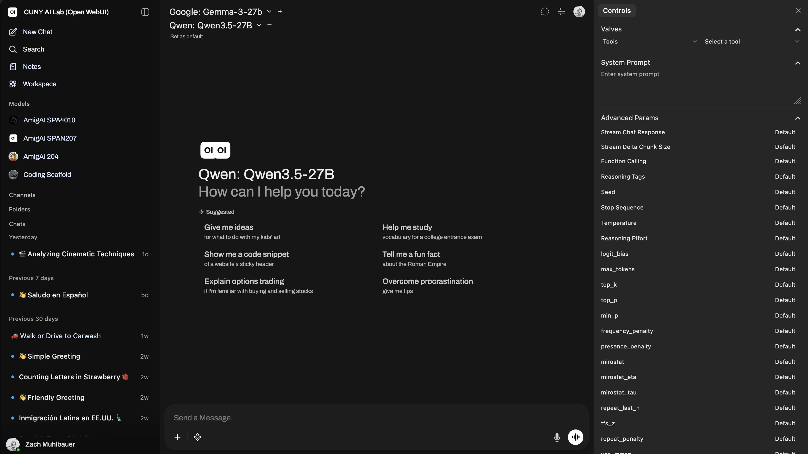
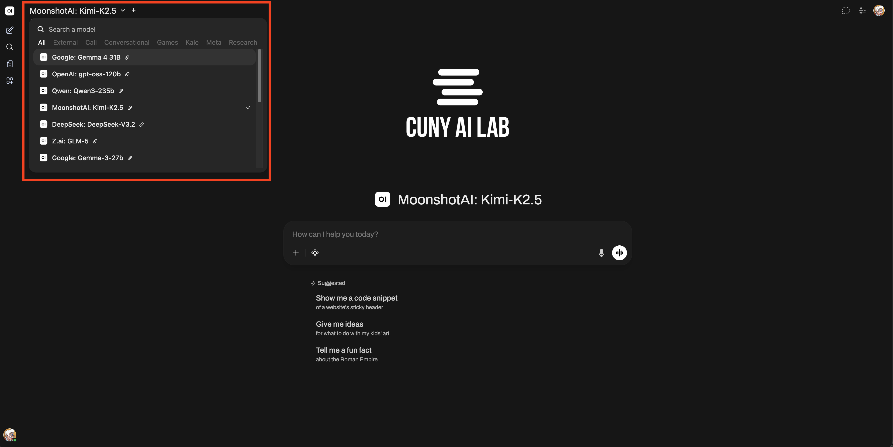
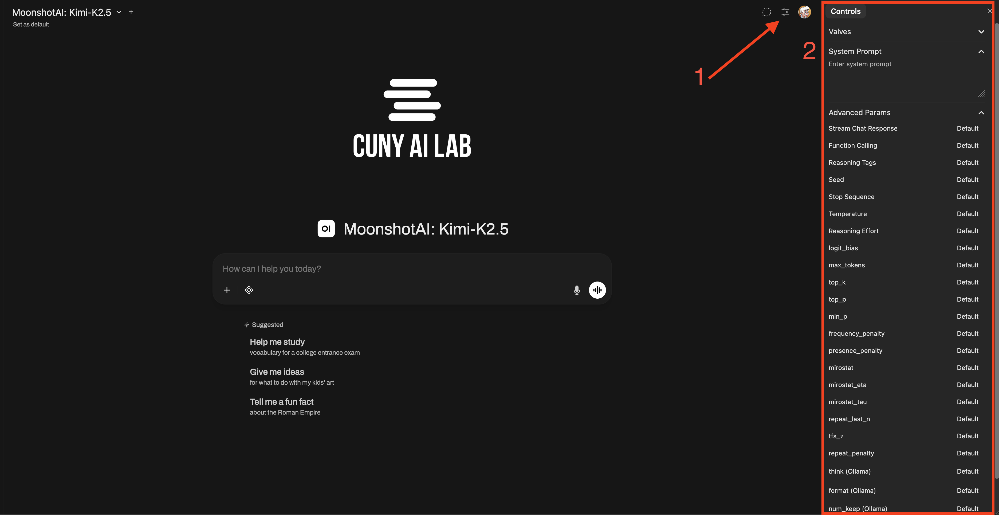

Workshop agenda
What we’ll do
- 01Start with an everyday algorithm
- 02Compare two model responses
- 03Set one system prompt
- 04Test and discuss
Tuesday, May 26, 2026
In three steps or less, describe something you do in your everyday life and frame it as a conditional, a loop, or a sequence.



“The car wash is 50 yards away. Do I walk or do I drive?”
Walk. Fifty yards is close.
Treats distance as the whole question.
Drive if you are washing the car. Walk if you are just going there.
Notices the purpose changes the answer.
What did each model pay attention to?
What context did the answer need?
Where could this help students read an AI answer more carefully?
What would you change in the next prompt?
System prompt
Read input twice. Do not jump to conclusions.
User prompt
“The car wash is 50 yards away. Do I walk or do I drive?”